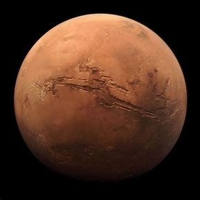

Selamat Datang Penjelajah....
Pada
PLANET TARIUM
Tata Surya merupakan kumpulan benda langit yang terdiri atas sebuah bintang yang disebut Matahari dan semua objek yang terikat oleh gaya gravitasinya.
Objek-objek tersebut berputar mengelilingi matahari, objek tersebut antara lain delapan buah planet yang sudah diketahui dengan orbit berbentuk elips, lima planet kerdil/katai, 173 satelit alami yang telah diidentifikasi, dan jutaan benda langit (meteor, asteroid, komet) lainnya
Penjelajah Mari kita bahas kedepalan Planet yang mengelilingi Matahari
1. Merkurius
Merkurius merupakan planet terkecil yang ada pada tata surya kita. Merkurius sendiri memiliki jarak sekitar 58 juta kilometer dari matahari. Planet merkurius ini tidak dapat dilihat hanya dengan kasat mata. Merkurius biasa bisa di lihat ketika disaat waktu fajar dan waktu senja. Serta Merkurius hanya memiliki 4.862 km, pada permukaan merkurius memberikan energi yang panas dan kering. Merkurius akan bergerak mengelilingi matahari 1 kali putaran membutuhkan waktu 88 hari dan akan berotasi dengan periode rotasi 59 hari karena merkurius tidak memiliki satelit. Merkurius melakukan gravitasi pada permukaan bumi sekitar sepertiga gravitasi.
2. Venus
Venus merupakan Planet paling dekat dengan matahari nomor dua setelah merkurius. Venus memiliki julukan 'Bintang Kejora', julukan tersebut muncul karena planet dapat dari Bumi pada sore hari serta terlihat seperti bintang, tapi tidak kerlap-kerlip.
Venus memiliki atmosfer yang beracun, diisi dengan karbon dioksida dan diselimuti oleh awan tebal berwarna kuning yang mengandung asam sulfat. Awan tersebut membuat panas terperangkap di dalamnya, hal tersebut yang menyebabkan efek rumah kaca berlebih. Itulah yang menyebabkan Venus termasuk Planet terpanas yang ada di tata surya kita Venus memiliki ciri berwarna putih kekuningan serta Satu hari di Venus sama dengan 243 hari di Bumi. Hal ini terjadi karena rotasi Venus berputar terbalik dari planet lainnya. Sehingga, Matahari di Venus terbit dari barat, sedangkan terbenam ke arah timur.
3. Bumi
Bumi merupakan planet yang ukurannya tidak terlalu besar, hal ini terjadi karena bumi yang kita tinggali dapat menampun jumlah penduduk yang tak terhitung banyaknya. Bumi memiliki atmosfer yang dapat melindungi dari paparan sinar UV yang berbahaya. Sehingga planet ini merupakan satu-satunya planet dalam tata surya yang dapat mendukung adanya kehidupan dan bumi termasuk planet ketiga dalam urutan sistem tata surya kita.
Bumi memiliki diameter kurang lebih sebesar 12.700 km dan akan berevolusi tiap 365,25 hari serta rotasi nya dalam waktu 24 jam. Dan bumi hanya memiliki satu satelit alami yaitu bulan. Bumi adalah salah satu Planet yang dapat mendaur ulang hidupnya dengan suhu dan tekanan permukaan bumi memungkinkan adanya air dan airnya bisa dijadikan Cair, Padat dan Uap.
4. Mars
Mars dijuluki dengan sebutan ‘planet merah’, Mars sendiri merupakan planet pada urutan keempat dalam tata surya. Mars memiliki atmosfer yang sangat tipis, dingin, berdebu, serta gurun. Planet Mars juga terkenal dengan gunung berapinya yang besar dan lembah yang dalam. Bahkan planet ini merupakan yang paling sering terjadi badai angin dibandingkan dengan planet lainnya.
Planet Mars memiliki dua satelit alami, yaitu Phobos dan Deimos. Suhu planet Mars antara -113 sampai 0°C. Mars memiliki permukaan yang berwarna merah, karena berasal dari oksida besi, Komposisi atmosfernya yaitu karbon dioksida, nitrogen, argon, oksigen, dan uap air. Jarak antara planet Mars dengan Matahari kurang lebih sebesar 228 juta km (142 juta mil).
5. Jupiter

Jupiter Merupakan planet kelima dalam tata surya kita, dan Jupiter adalah Planet terbesar pada tata surya. Pada permukaan tengah Jupiter memiliki garis berukuran sekitar 142.860 km dan mempunyai volume sekitar 1.300 kali dari volume bumi. Dengan ukurannya yang besar Jupiter dapat terlihat dengan kasat mata hal ini terjadi selain ukurannya yang besar Jupiter memantulkan sekitar 70% cahaya matahari.
Untuk jupiter rotasi nya melewati masa rotasi selama 9,8 jam yang sekitar 2,5 kali lebih cepat dibandingkan dengan bumi serta dengan revolusi nya sekitar 12 tahun.
6. Saturnus
Saturnus planet ke enam dalam urutan anggota tata surya. Saturnus merupakan planet yang terindah diantara planet lainnya karena saturnus memiliki cincin yang mengelilinginya. Karena ukuran cincinnya lebih besar dibandingkan dengan planet yang lainnya membuatnya unik. Karena pada saturnus terdapat banyak cincin-cincin kecil yang berjumlah sampai ratusan. Cincin-cincin kecil yang ada di planet saturnus ini tersusun dari gas beku dan butiran-butiran debu dan menurut para peneliti merupakan peninggalan dari satelit yang sudah hancur karena benturan dengan planet-planet disekitarnya.
7. Uranus
Uranus planet ke tujuh dalam dalam pembahasan dan anggota tata surya. Uranus ini sangat berbeda dengan planet lainnya karena salah satu kutub dari planet uranus ini menghadap ke matahari dan berotasi pada sumbu yang sebidang denga titik edar yang mengelilingi matahari. Uranus pertama kali ditemukan dengan menggunakan teleskop. Planet ini merupakan yang paling dingin di antara planet lainnya karena bersuhu -224°C. Planet ini memiliki ukurannya 4 kali Bumi.
Uranus sendiri Memiliki satelit alam sebanyak 27 buah. Dengan diameter planetnya sebesar 50.724 km. Uranus ini Berwarna biru muda dengan cincin redup vertikal. Atmosfernya uranus terdiri dari metana, inti padat metana beku. Jarak Uranus ke Matahari sejauh 1,8 miliar mil. Uranus membutuhkan 17 jam untuk berotasi pada porosnya, dan membutuhkan 84 tahun untuk mengorbit Matahari.
8. Neptunus
Uranus planet urutan terakhir pada pembahasan ini dan planet terakhir di tata surya. Neptunus memiliki angin badai sehingga disebut dengan planet yang paling berangin dalam tata surya, bisa saja ada badai yang sangat besar yang dimiliki Neptunus. Neptunus memiliki jarak dari matahari yaitu sebesar 4-500 jt km. Waktu revolusi planet ini membutuhkan selama 165 tahun serta yang dibutuhkan, untuk rotasinya adalah 16 jam . Planet neptunus ini memiliki kesamaan dengan uranus memiliki atmosfer yang terdiri dari helium dan hidrogen serta memiliki gas metana yang sama dengan planet neptunus. Pada planet neptunus ini cukup unik dengan palnet lainnya karena planet ini tidak memiliki batasan antara lapisannya.